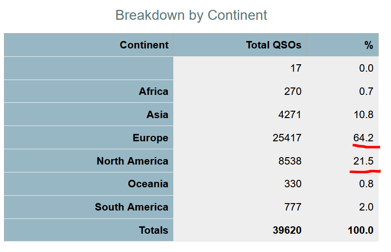

Unless my math and understanding is off, this slot is out of band for the US (not all band permissions are the same around the world).
The US allowed channel 2 is 5.348 (channel center) with a max allowance of +/- 1.7 Khz (or 5.349.7 up). Not high enough.
US channel 3 (center) is 5.358.5 (minus 1.7 KHz is 5.356.8) or
up 6.5+ from a8ok... I'm not seeing US callers in that range.
As it is has no value for DXCC (does for other 'awards'), maybe
if you stay above 5.356.8 but is it worth it? Will they listen up
6.5+?
If you look at the team stats (Clublog), you'll see just how EU
centric this team is too (but some of us have several slots
filled, meaning the bulk of NA has minimal) so in this case of
60M, it mostly works out to their plans that we don't get the slot
(legally).
Yes, I'm seeing (clearly, ~5.353.6 OOB) US callers, but tread
lightly... This is a risk:return choice and I have a fair amount
invested to use my license...
If I'm wrong, please correct me but I'll sit this slot out (a shame, they're EASY copy here on a vertical wire antenna, almost loud). And I sure wish we had the spectrum, not channels to simplify the band use (at 100 watts, not the suggested EIRP of 5 watts which would make the band useless).
It would also be nicer if some EU DXped teams would consider the limitations on this band and to balance the scales but here we are.
73,
Rick nk7i
